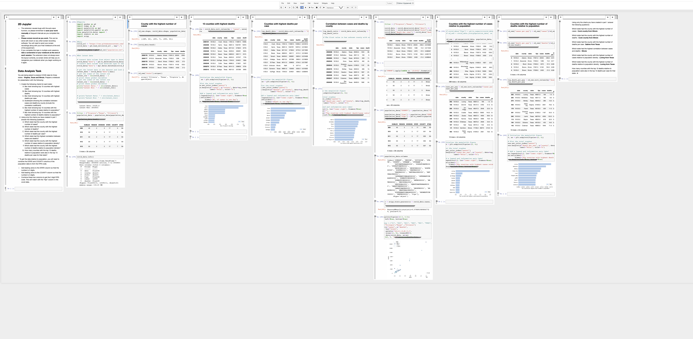

Featured Project
2D Jupyter
A Jupyter Notebook extension that enables multi-column layouts and freeform cell placement. Completed in fulfillment of M.S thesis requirements.
Related Publications:- "Exploring Organization of Computational Notebook Cells in 2D Space," 2022 IEEE Symposium on Visual Languages and Human-Centric Computing (VL/HCC), Roma, Italy, 2022, pp. 1-6, doi: 10.1109/VL/HCC53370.2022.9833128.
- "'There is no reason anybody should be using 1D anymore': Design and Evaluation of 2D Jupyter Notebooks" Graphics Interface 2023. (in press)
